Guide / Draw and edit
The DMN editor
The DMN editor draws decisions as tables, so business rules live in a file you can review, try with real values, check and deploy.
What it is
DMN is a standard for writing decisions as tables. A row says: when these inputs match, give this output. Penstock opens .dmn files in an editor built on dmn-js. The file is saved as you edit, like a diagram.
Open a decision
- Open a
.dmnfile. - The bar at the top shows one button for the Requirements diagram, and one for each decision in the file. Press a decision to open its table.
- Edit the table. Add rows, change the inputs and outputs, set the hit policy. The hit policy says what happens when several rows match, for example
FIRSTtakes the first row. - Use the extra column for annotations on each rule.
- To edit the id, name and documentation of a decision, switch to the Requirements view, select the decision and open the Properties tab of the sidebar.
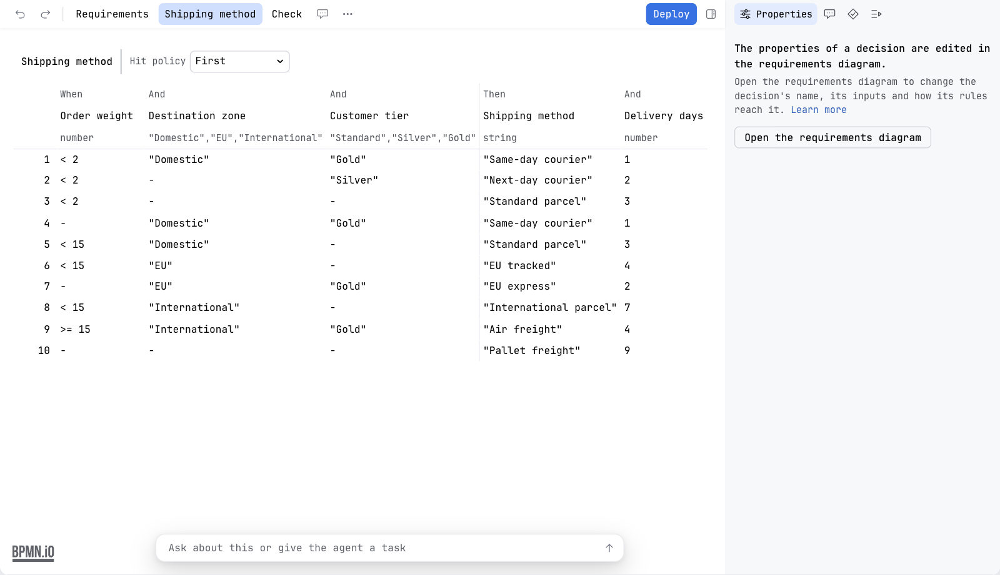
What you can edit
- The requirements diagram (DRD): which decisions depend on which. Trace paths follows what a decision needs and what depends on it.
- In the requirements diagram, cut, copy, paste and duplicate work through the same clipboard, keys and menu entries as in the BPMN editor. Duplicate puts a copy beside the selection without touching the clipboard. See Copy and paste.
- Decision tables, with typed inputs and outputs and rule annotations.
- Literal expressions and boxed expressions.
- The Camunda DMN extensions. They are read and kept.
The properties panel
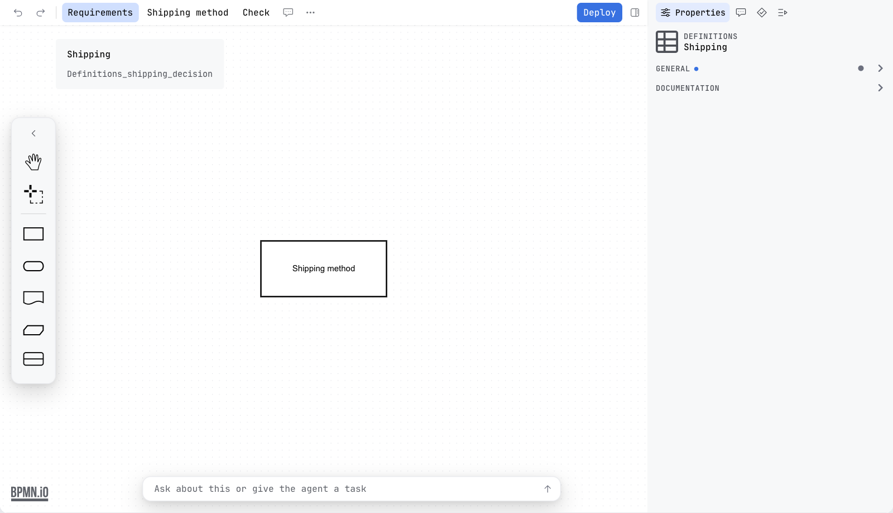
In the requirements view, the Properties tab of the sidebar edits a decision: its id, name and documentation. So the id that a business rule task calls can be changed without opening the XML. On Camunda 7 and CIB seven it also has the version tag and the history time to live. On Camunda 8 it has the version tag. On Operaton it shows id and name only. The tab has the same dense layout and theme as the one for BPMN, and opens and closes with the same sidebar toggle. Over a decision table the tab is empty on purpose, because a table belongs to its requirements diagram, and it offers an action that opens it.
Older DMN files
Files written as DMN 1.1 or 1.2 open in the editor. Penstock converts them to DMN 1.3 in memory, and keeps what the engine added to a decision. A notice above the editor says the file will be saved as DMN 1.3 when you change it: It was converted to DMN 1.3 and will be saved as DMN 1.3 when you change it. The file on disk is not touched until you change something.
The toolbar
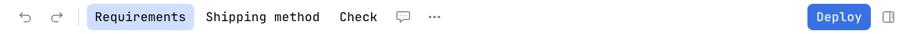
| View buttons | Requirements, then one per decision. |
| Check | Runs the decision table check and opens the Problems tab. Pro. |
| Deploy | Sends the file to the engine with the settings a diagram uses. Shown when the engine is known. See Deployment. |
| Sidebar | An icon that shows or hides the sidebar. |
| More | Holds Trace paths, the four spreadsheet actions, Share as HTML… and Keyboard shortcuts. The spreadsheet actions are for tables: see Decision tables and spreadsheets. The others: Trace paths, Share as HTML. |
The DMN editor follows the theme of your tool, and looks like the diagram editor: the same toolbar order, the same floating palette, the same sidebar. Tables sit inset with quiet lines, no stripes, and a highlight on the row under the pointer.
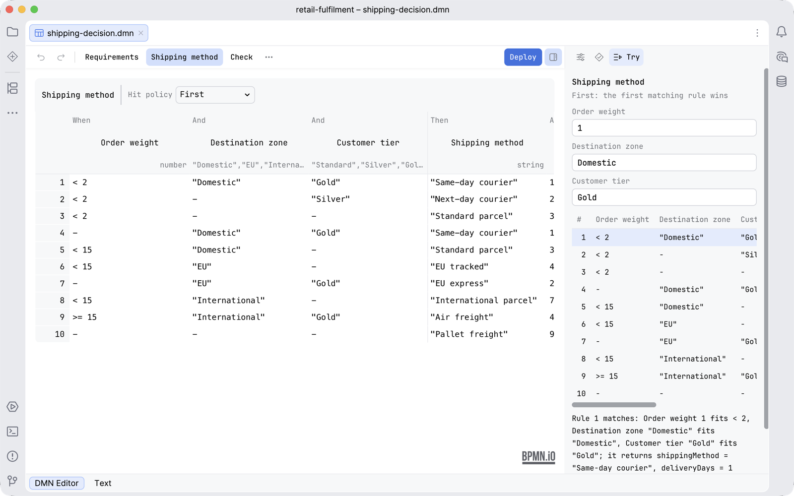
The sidebar of a decision
The sidebar of a decision has three tabs, in this order.
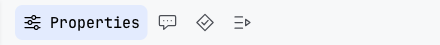
| Properties | The id, name and documentation of a decision, in the requirements view. Over a decision table it says that the properties of a decision are edited in the requirements diagram, and offers to open it. |
| Problems | The findings of the decision table check. Until you press Check it says Check the decisions to see problems here. See below. |
| Try | Runs the open table against values you type. See Try a decision table. |
Try a decision table
The Try tab answers "what does this table give for these values?" without deploying anything and without leaving the file. It reads the table, runs it in the editor and shows which rules match, why, and what the decision returns. Nothing is sent to an engine and nothing is written to the file.
- Open a decision table: press the button of a decision in the bar above the editor.
- Open the Try tab of the sidebar. It names the decision and says what its hit policy does, for example First: the first matching rule wins.
- Type a value for each input the table asks for. A number input takes a number, a date input takes a date as
YYYY-MM-DD, a true or false input is a checkbox. A value of the wrong kind says what it should be. - Read the table under the fields. The rules that match are marked.
- Read the sentence under the table. It says which rule matches and why, for example Rule 1 matches: Order weight 1 fits < 2, Destination zone "Domestic" fits "Domestic", Customer tier "Gold" fits "Gold"; it returns shippingMethod = "Same-day courier", deliveryDays = 1.
- Under it, the outputs of the decision are listed with their values.
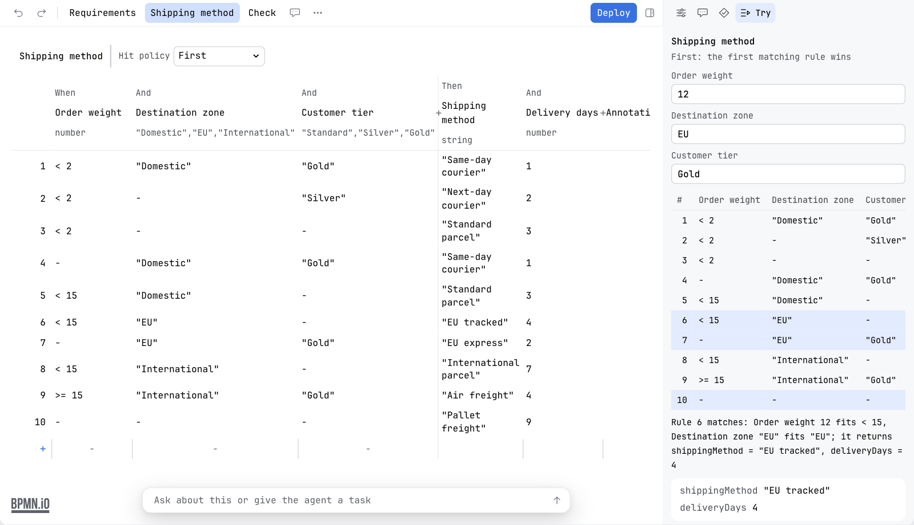
What each hit policy returns
| Hit policy | What the Try tab shows |
|---|---|
| First | The first matching rule. |
| Rule order | Every matching rule, in rule order. |
| Collect | Every matching rule. With an aggregation, the result of it over the matches: Sum, Count, Smallest, Largest, Average, Middle or Most often. |
| Unique, Any | The engine's own error where the engine would raise one: two rules match under Unique, or rules with different results match under Any. |
| Priority | The matching rule with the highest output priority. |
| Output order | Every matching rule, by output priority. |
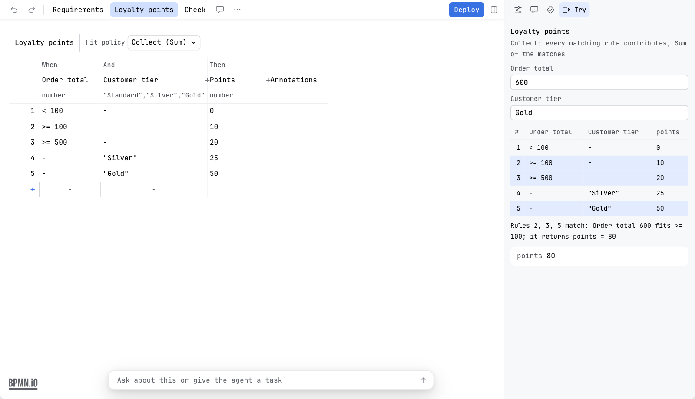
A decision that other decisions feed
When a decision needs the result of another decision, the Try tab runs that one first, in order, and shows it above. Its result is the input of the decision that uses it, so you are not asked for it. You type only the values that come from outside.
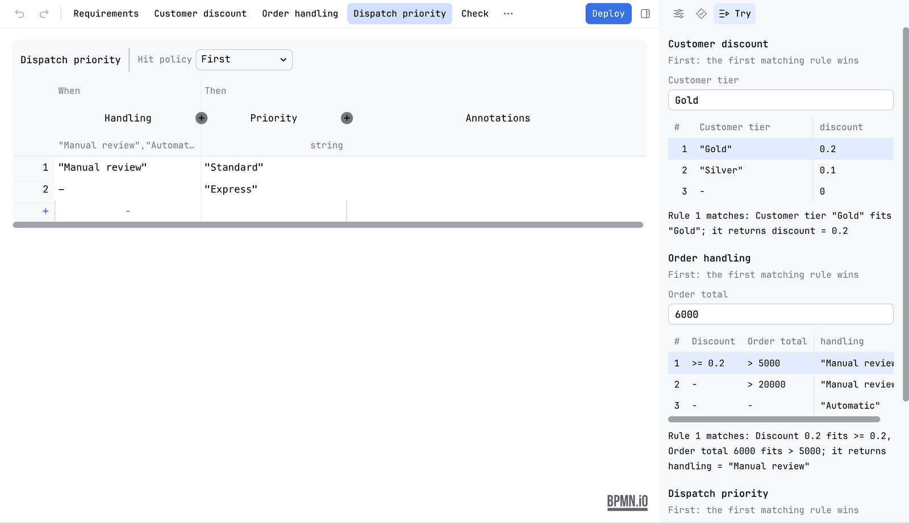
What it remembers, and what it will not guess
- The last values you typed for a decision are kept while the file stays open, so you can switch tabs and come back.
- While a value is missing, the tab says needs a value for and names it, and no rule is compared.
- A cell Penstock cannot read is named, with the words Penstock cannot evaluate this cell here, instead of being guessed at.
- With no decision table open the tab says Select a decision table to try it.
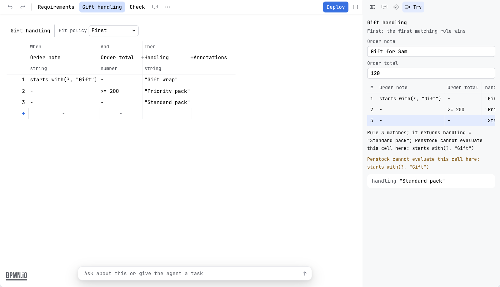
Decision tables and spreadsheets
A decision table goes to a spreadsheet and back, so the rules can be read and edited in a spreadsheet. These actions are in the More menu, under File. The first three are offered while a decision table is open.
| Export decision table as a workbook… | Saves the inputs, the outputs and every rule as an Excel workbook. The first row names the inputs and the outputs. |
| Export decision table as CSV… | The same as comma separated values, one cell per column. |
| Import decision table… | Replaces the rules of the selected table with those in a workbook or a CSV whose first row names the inputs and the outputs. |
| Add rules from spreadsheet… | Fills the open decision table with the rules in a workbook or a CSV. |
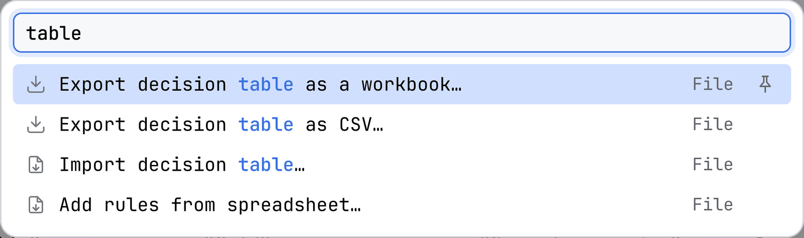
Before anything is written, a preview says what would change: how many rules are added, removed or changed, rule by rule and cell by cell. A file that would change nothing says The table already says this, so there is nothing to import. The whole import is one change, so one Undo takes it back.
An import is refused, with the reason, when the file is empty, when it is named like a workbook but is not one, when the workbook is damaged or protected by a password, when the header names other columns than the table has (The header names …; the table needs …), or when a cell is not a comparison, a range or a value (Row 4 cannot be read).
The decision table check
Pro
- Open a decision table and press Check. A card called Decision check opens over the canvas with the first findings. Show all opens the Problems tab, which holds the whole list. While that tab is open the card stays away.
- Each finding names the rules and a value that both match, or the values that no rule matches.
- Click a finding. The editor goes to it.
- Press Check again to put the card away. Recheck, on the card and on the tab, runs the check again.
| Finding | Rule |
|---|---|
| Two rules of a table that expects one match match the same input. For an Any table, rules that do so with different results. | table/rule-overlap |
| An input that no rule matches | table/rule-gap |
| A table with an expression the check cannot read | table/table-unread |
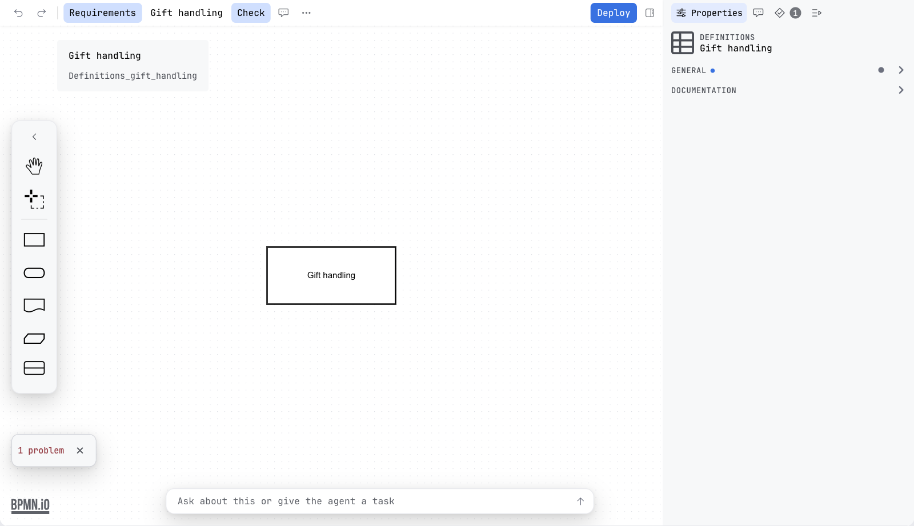
Cells are read as FEEL unary tests: comparisons, ranges, lists, strings, booleans and not(). In an integer column the space between two whole numbers is not counted as a gap. When all is well the card says No rules overlap, and every input has a rule.
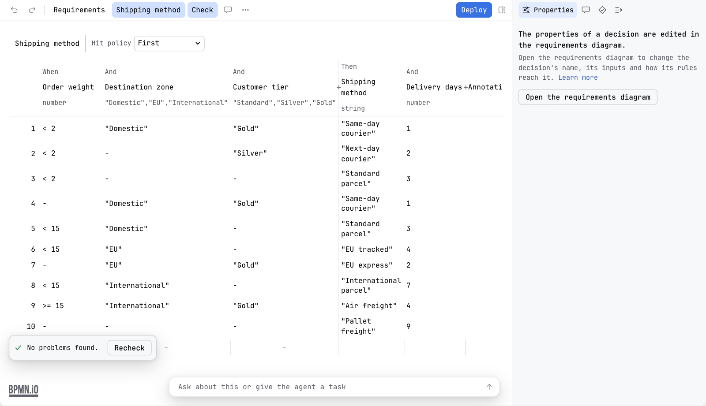
The same check runs on every .dmn file when you check the whole project. See Diagram check.
Documentation of a decision
penstock docs writes a page for each decision file with every rule as a table, its hit policy in words, what it needs, and the table check. See Every command.
What you see
- A bar of buttons: Requirements and one for each decision. The table sits inset, with a highlight on the row under the pointer.
- After Check, a card called Decision check with a count of problems, or the line No rules overlap, and every input has a rule.
- In the Try tab, the rules that match your values marked in the table, and a sentence that says why.
Common problems
- The file "could not be read as DMN".
- The editor shows the reason. The file may not be valid DMN XML. Open the Text tab and look at the message.
- The table check says a table cannot be checked.
- A cell holds an expression the check cannot read. Simplify the cell named in the finding.
- The Try tab says a decision needs a value.
- An input has no value yet. Type one in the field with that name. No rule is compared until every input has a value.
- The Try tab says Penstock cannot evaluate a cell.
- The cell holds an expression that is not a comparison, a range or a value Penstock reads. The tab names the cell. Simplify it, or try the decision on an engine.
- An import is refused.
- The message names the reason, such as a header that does not match the columns of the table or a cell that cannot be read. Fix the file and import it again. Nothing is written until you confirm the preview.
- The spreadsheet actions are not in the menu.
- Export and Import need a decision table to be open. Press the button of a decision in the bar first.
- Deploy is missing.
- It shows when the engine is known. Set
engineinpenstock.yaml.